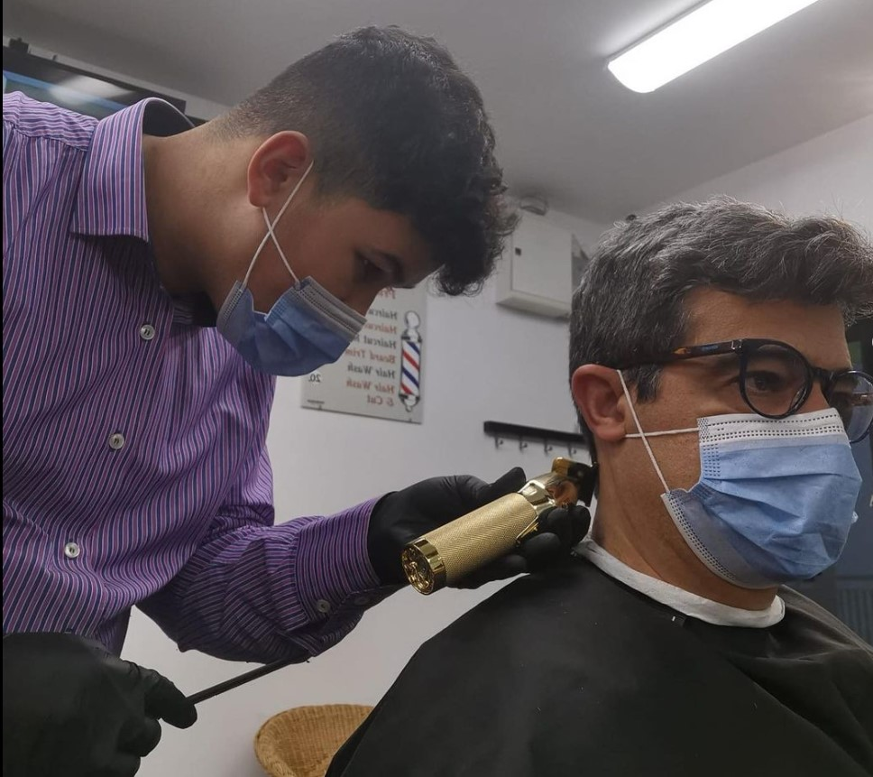

This section encapsulates all of the text and image from about

A Little About Me
Hi there! my name is guilherme,I am a 15 year old barber who dreams of becoming better than I was yesterday everyday.The reason I got into cutting hair was because of my good friend Otto The owner of the shop that I work at inspired me to train in the craft similar to how Jiraya inspired Naruto to learn Sage mode, I only work a few days a week but don't let that stop you from going to the shop all the boys that work there are great people and amazing barbers.